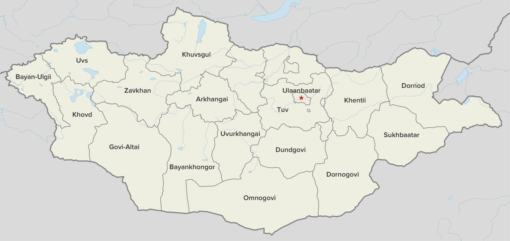

Provinces
Mongolia is divided into capital city and aimags /provinces/, with further division of aimags into somons, somons into bags, capital city into districts, and districts into horoo. There are 21 aimags plus 3 "city areas ". They are Darkhan-Uul, Orhon, and Gobi-Sumber.
